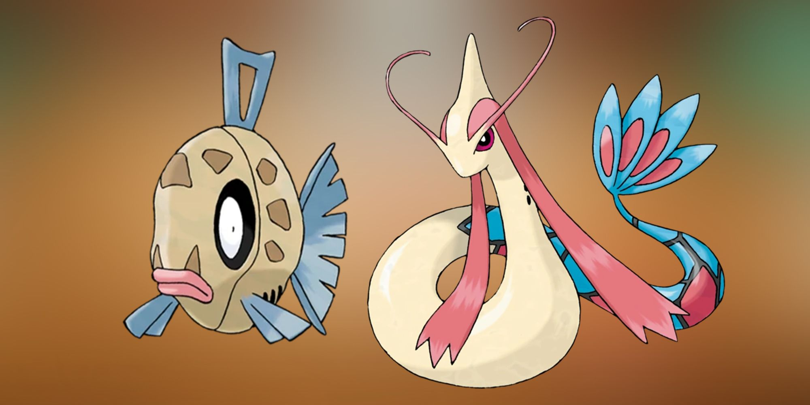
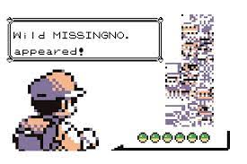
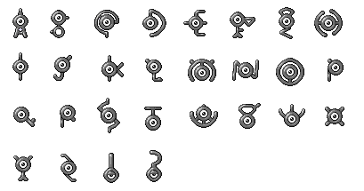

Pokémon tiene apoyo y aprobación por parte del Vaticano
Tal vez esto pueda parecer una locura pero sí, es cierto. A inicios de los 2000 la popularidad de Pokémon
despegó en todo el mundo, esto causó que grupos religiosos criticaran la franquicia alegando que Pokémon
estaba relacionado con ritos satánicos, entre otras cosas. En respuesta a estos ataques, el Vaticano
declaró y dio su aprobación el 21 de abril del año 2000 a Pokémon, diciendo que los juegos
estaban llenos de imaginación y basados en el concepto de la amistad.
Pikachu ocupó el segundo lugar en la lista “The Best People of 1999”
A finales de los 90 Pikachu ya era toda una celebridad en el mundo entero, y no es para menos. La
revista Time incluyó a Pikachu en su lista de “The Best People of 1999”, en un
segundo puesto, justo por detrás de Ricky Martin. ¿Merecía más ese primer puesto Ricky Martín o Pikachu?
Los entrenadores Pareja Joven usan Pokémon que se complementan entre ellos
Pareja Joven es una pareja de entrenadores introducida en la tercera
generación. La pareja está formada por un chico y una chica que luchan en combates dobles. Suelen
utilizar Pokémon que se complementan entre ellos como Nidoran hembra y macho o Plusle y Minun, entre
muchos otros. La pareja se hizo muy popular en internet ya que en uno de los videojuegos ambos sacan a
combatir un Onix y un Cloyster y claro, no pueden faltar los memes.
Poliwhirl es el Pokémon favorito de Satoshi Tajiri
¿Alguna vez te has preguntado cuál es el Pokémon favorito del propio creador de la serie? El Pokémon
favorito de Satoshi Tajiri no es otro que Poliwhirl. Por esta razón el inicial
de Red en el manga es este Pokémon. ¿Lo sabías?
La franquicia en Japón tiene un nombre diferente
A diferencia del resto del mundo donde la franquicia es conocida como Pokémon, en Japón se llama
Pocket Monsters (ポケットモンスター). Pero a pesar de esto sí nombran Pokémon a las criaturas de la
serie, por lo que son los únicos capaces de diferenciar entre la franquicia y los seres Pokémon. ¿Tal vez
el cambio de nombre sea por esto?
Las películas de Pokémon siempre se estrenan en julio
Hasta antes de la pandemia causada por el COVID, cada año y desde 1998 se ha estrenado una película
nueva de Pokémon y casualmente todas lo hacen en el mes de julio. Pokémon: los secretos de
la selva, es la única película que no se ha estrenado en ese mes, posiblemente debido a la
pandemia, ya que el primer avance de la película se mostró en enero de 2020 pero no se pudo estrenar en
cines hasta diciembre de ese mismo año.
Kangaskhan siempre es hembra
Kangaskhan es un personaje muy conocido por ser el Pokémon que siempre lleva a su bebé en su
bolsa o marsupio. Curiosamente este Pokémon siempre es hembra, nunca ha aparecido ningún
macho en el anime, videojuegos o manga. Entonces, ¿Cómo crían estos Pokémon?
El Pokémon más feo y el más bonito
Según la propia Pokédex el Pokémon más feo de todas las criaturas del juego sería
Feebas, un Pokémon tipo agua de la tercera generación y contraparte de Magikarp. Por el
contrario, el Pokémon que es reconocido como el más hermoso es la propia evolución de Feebas,
Milotic. Feebas evoluciona a Milotic cuando su belleza aumenta a 170 puntos y subiendo un
nivel, o bien intercambiándolo equipado con escama bella.

La evolución de Magikarp está basada en una leyenda china
Está claro que la evolución de Magikarp a Gyarados es una de las evoluciones más impactantes de todos los
Pokémon. Pero, ¿Sabías que esta evolución está basada en una leyenda china?. Esta leyenda narra cómo
carpas se precipitan por una cascada llamada la Puerta del Dragón y se convierten en dragones, dice
literalmente “la carpa salta por encima de la Puerta del Dragón” y refleja la fuerza interior
que todos tenemos en nosotros. Se dice que esta es una de las evoluciones más drásticas del juego debido a
su aumento de poder.
MissingNo. el glitch de la primera generación
MissingNo. es un Pokémon glitch que aparece principalmente en las
versiones Roja y Azul de la primera generación. Es un fallo de los videojuegos que genera errores
gráficos, pero a pesar de ello, tiene efectos beneficiosos para aumentar de nivel. Este “Pokémon” tiene
muchas curiosidades y actualmente existen un sinfín de guías en internet para poder encontrarlo y
atraparlo en los juegos, aunque parece ser que jamás llegó a España ya que el error fue arreglado durante
la fase de traducción.

El nombre de Ash en japonés
Todos sabemos quién es Ash pero, ¿sabes cuál es su nombre en japonés?. Ash fue llamado
Satoshi en japonés en honor al creador de Pokémon, Satoshi Tajiri. Generalmente
todos los personajes de la franquicia tienen nombres diferentes en Occidente y Japón, siendo Pikachu uno
de los pocos personajes que mantiene el mismo nombre.
Las cartas de Pokémon fueron prohibidas en Arabia Saudí
Con la fama vienen los problemas. Es muy conocido por todos la censura que ha tenido el anime numerosas
veces en varios países pero la franquicia ha tenido muchos problemas diferentes a lo largo de su historia.
En 2001 las cartas de Pokémon fueron prohibidas en Arabia Saudí por mostrar la estrella de
David, esto sentó muy mal a las autoridades conservadoras musulmanes del estado y terminaron prohibiendo
las cartas alegando que el juego promovía las apuestas y el Sionismo (un movimiento que quería restablecer
y proteger la nación judía).
Mew no puede aprender todos los ataques
Existe el falso mito de que Mew es capaz de aprender todos los movimientos existentes en los juegos. Esto
es falso ya que al entregar a Mew al tutor de movimientos este no será capaz de aprender Cometa
Draco. Tampoco puede aprender otros movimientos como planta feroz, hidrocañón, anillo ígneo o
voto de agua.
Más de 600 niños fueron hospitalizados en Japón por un episodio de Pokémon
Incluso en su país de origen Pokémon ha tenido varias polémicas. Una de ellas muy conocida fue cuando el
16 de diciembre de 1997 se emitió el episodio 38 de la primera temporada. Este episodio
contenía diferentes destellos y movimientos de cámara que provocó que más de 600 niños sufrieran ataques
epilépticos. Debido a esto la emisión del anime se paralizó durante 4 meses y el episodio nunca fue
transmitido en el resto del mundo.
En 2006 China hizo boicot a varias series de animación, entre ellas Pokémon
En 2006 la fama de Pokémon estaba disparada en todo el mundo, incluido China. Ese año
China decidió hacer un boicot a diferentes series de animación como los Simpson, Disney y
Pokémon y prohibieron emitirlas en prime-time para que su propia industria de animación tuviese más apoyo
que series extranjeras.
Existen 28 formas de Unown
Unown es un Pokémon psíquico introducido en la segunda generación. Existen 28
formas diferentes de Unown, cada una representa una letra del abecedario y los signos de
interrogación y exclamación, además cada forma de Unown significa una palabra por la letra de la forma que
representan pero en inglés.

La generación más poderosa y la más débil
Después de ocho generaciones de Pokémon se estima que la más débil es la segunda generación
con solo 17 Pokémon que superan los 85.000 puntos de estadísticas. Por otro lado, la más fuerte
sería la cuarta generación con un total de 37 Pokémon que superan los 85.000 puntos de
estadísticas.
Tipo con mayor y menor número de movimientos
Se dice que el tipo con mayor cantidad de movimientos es el de tipo normal mientras que
el que menos tiene es el de tipo dragón. Además, en la segunda generación había un tipo
llamado tipo ??? (ya inexistente) con el ataque maldición, que pasó a ser de tipo fantasma en
la quinta generación.
Los nombres de los profesores
Casualmente todos los nombres de los profesores en los videojuegos principales tienen nombre de algún
árbol o planta en algún idioma. Por ejemplo, Oak significa roble y Elm significa olmo. ¿Lo
habías notado?
Game Freak se hubiese arruinado si Pokémon no hubiera tenido éxito
El coste inicial de las primeras ediciones de Pokémon fue tan alto que se estima que si no hubiera tenido
éxito posiblemente Game Freak se hubiese arruinado ya que en aquel entonces la empresa contaba con muy
poco presupuesto. ¡Menos mal que no fue así!